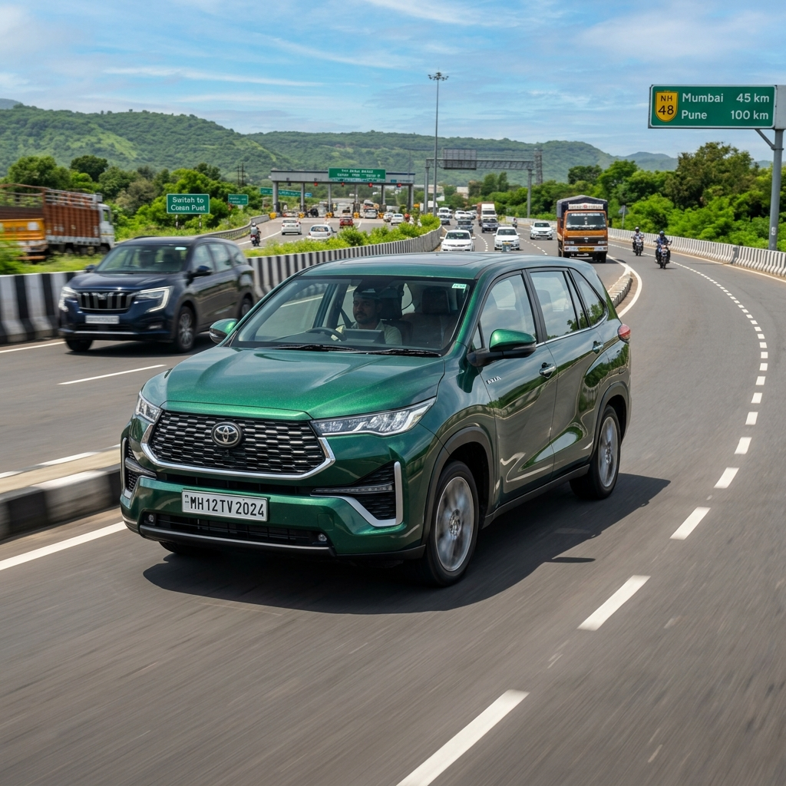

The automotive landscape in India is undergoing a massive shift towards greener, more sustainable fuels. At the forefront of this transition is the Toyota Innova HyCross Flex Fuel prototype, a vehicle that promises to combine Toyota’s legendary reliability with the environmental and economic benefits of E85 ethanol fuel.
As the Indian government pushes for its 2026 ethanol blending targets, the demand for Flex Fuel Vehicles (FFVs) is skyrocketing. But is the Innova HyCross Flex Fuel ready for the Indian market? When will it launch, and how much will it cost?
In this comprehensive guide, we break down everything you need to know about the Toyota Innova HyCross Flex Fuel, from its advanced hybrid E85 engine specifications to its expected pricing and launch timeline.
---
Table of Contents
1. Introduction to the Innova HyCross Flex Fuel 2. What is a Flex Fuel Hybrid? 3. Engine and Performance Specifications 4. Expected Launch Date in India 5. Estimated Price and Variants 6. Mileage and Running Costs on E85 7. Innova HyCross E85 vs Petrol Hybrid 8. Government Subsidies and Tax Benefits 9. Infrastructure: Where to Find E85 Fuel 10. Frequently Asked Questions (FAQs) 11. Conclusion---

1. Introduction to the Innova HyCross Flex Fuel
Showcased at major automotive expos, the Toyota Innova HyCross Flex Fuel is the world’s first BS6 Phase-II compliant flex-fuel strong hybrid vehicle. It represents a significant leap forward in alternative fuel technology, engineered specifically to run on fuel blends containing up to 85% ethanol (E85).
For Indian consumers, the Innova has always been the gold standard for MPVs. By introducing a flex-fuel variant, Toyota aims to drastically reduce the vehicle's carbon footprint while simultaneously lowering running costs for owners, leveraging India's growing domestic ethanol production.
---
2. What is a Flex Fuel Hybrid?
A Flex Fuel Vehicle (FFV) is designed to run on more than one type of fuel, typically a blend of petrol and ethanol. What makes the Innova HyCross unique is that it is a Strong Hybrid Flex Fuel Vehicle.
This means it combines two advanced technologies: 1. Flex Fuel Engine: An internal combustion engine specifically modified with hardened valve seats, specialized fuel lines, and an advanced Engine Control Unit (ECU) to safely burn E85 (85% ethanol, 15% petrol). 2. Self-Charging Electric Motor: A hybrid battery system that assists the engine, providing torque at lower speeds and allowing the car to run on pure electricity for short distances.
By combining the low emissions of E85 fuel with the high efficiency of a strong hybrid system, Toyota has created a vehicle that offers the "best of both worlds."
---
3. Engine and Performance Specifications
The Innova HyCross Flex Fuel prototype is built on Toyota's TNGA (Toyota New Global Architecture) platform. Here are the core specifications:
* Engine Type: 2.0-Litre, 4-Cylinder Atkinson Cycle Petrol Engine (Modified for E85) * Electric Motor: Permanent Magnet Synchronous Motor * Combined Power Output: Approximately 184 bhp (137 kW) * Combined Torque: 206 Nm (Engine) + 206 Nm (Motor) * Transmission: e-CVT (Continuously Variable Transmission) * Drivetrain: Front-Wheel Drive (FWD) * Fuel Compatibility: E20 to E85 (20% to 85% Ethanol Blend) * Emissions Compliance: BS6 Phase-II (RDE compliant)
Performance Note: Ethanol has a higher octane rating (approx 105) than standard petrol (91). While ethanol has lower energy density, the advanced ECU in the HyCross adjusts ignition timing to capitalize on the higher octane, ensuring that the power output remains identical to the standard petrol-hybrid model, with no noticeable drop in performance.
---
4. Expected Launch Date in India
As of mid-2026, the Toyota Innova HyCross Flex Fuel remains a prototype and demonstration vehicle. Toyota Kirloskar Motor (TKM) has not announced an official commercial launch date for the retail market.
Why the delay? The launch of any OEM (Original Equipment Manufacturer) flex-fuel vehicle in India is heavily dependent on the national fuel infrastructure. While the Indian government is aggressively pushing for 500 E85 fuel stations by December 2026, automakers require a guaranteed, pan-India supply chain of E85 before mass-producing FFVs.
Expected Timeline: * Late 2026: Potential limited rollout for government fleets or specific pilot cities (e.g., Pune, Delhi NCR) where E85 infrastructure is strongest. * 2027-2028: Expected broader commercial availability as the E85 pump network matures.
Currently, there is no official confirmation on retail availability.
(Internal Link: Read our guide on E85 Fuel Stations in India: Complete City-Wise Directory)
---
5. Estimated Price and Variants
When the Innova HyCross Flex Fuel eventually launches, how much will it cost?
Developing a flex-fuel engine requires specialized components to prevent ethanol corrosion. Furthermore, integrating this with a strong hybrid system carries high R&D costs. However, government subsidies may offset these manufacturing premiums.
* Current Standard HyCross Hybrid Price: ₹25.97 Lakh – ₹30.98 Lakh (Ex-Showroom) * Expected Flex Fuel Premium: ₹50,000 to ₹80,000 over the standard hybrid variants. Estimated Launch Price:** *₹26.50 Lakh – ₹31.80 Lakh (Ex-Showroom)
(Note: These are estimates based on industry trends. Final pricing will depend heavily on the GST bracket applied to Flex Fuel Vehicles at the time of launch).
---
6. Mileage and Running Costs on E85
A common concern with ethanol is its lower energy density compared to petrol. E85 contains about 25-30% less energy per litre. Consequently, flex-fuel vehicles typically experience a drop in fuel efficiency (mileage).
However, because the HyCross is a Strong Hybrid, the electric motor does a lot of the heavy lifting in stop-and-go city traffic, mitigating the mileage drop.
Estimated Mileage Comparison: * Standard Petrol Hybrid: ~23.24 km/l (ARAI Claimed) * Expected E85 Flex Fuel Hybrid: ~16.5 km/l to 18.0 km/l
The Cost Advantage: While the mileage drops, E85 is significantly cheaper than petrol. * Average Petrol Price (Delhi): ₹94/L * Average E85 Price (Delhi): ₹82/L
When calculating the cost per kilometer (₹/km), the Innova HyCross Flex Fuel is expected to offer running costs comparable to, or slightly cheaper than, a traditional diesel MPV, making it an incredibly economical choice for long-distance drivers.
(Internal Link: Check our Live E85 Fuel Price and Cost Calculator)
---
7. Innova HyCross E85 vs Petrol Hybrid
How does the prototype compare to the car currently sitting in showrooms?
| Feature / Spec | Standard HyCross Hybrid | HyCross Flex Fuel (Prototype) | | :--- | :--- | :--- | | Fuel Type | Petrol (E20 Compliant) | Petrol + Ethanol (Up to E85) | | Engine Output | 184 bhp | 184 bhp (Expected) | | Fuel Economy | 23.24 km/l | ~17.5 km/l (Estimated) | | Fuel Cost / Litre | ~₹94 | ~₹82 | | Tailpipe Emissions | Low | Extremely Low (Up to 80% less GHG) | | Availability | Available Now (Waiting periods apply) | No Official Launch Date |
---
8. Government Subsidies and Tax Benefits
The Indian Government, spearheaded by the Ministry of Road Transport and Highways (MoRTH), is actively encouraging the adoption of biofuels to reduce the nation's massive crude oil import bill.
While specific retail subsidies for the Innova HyCross Flex Fuel have not been finalized, buyers can expect: 1. Lower GST: The government is considering reducing the GST on Flex Fuel Vehicles to put them on par with Electric Vehicles (5%), down from the hefty 28% (plus cess) applied to internal combustion engine cars. 2. Road Tax Exemptions: Several states (such as Uttar Pradesh and Maharashtra) have proposed zero or heavily subsidized registration fees for strong hybrids and alternative fuel vehicles.
(Internal Link: Learn more about Government Subsidies for Flex Fuel Vehicles)
---
9. Infrastructure: Where to Find E85 Fuel
Owning an E85 Innova HyCross will only be practical if you can refuel it. The Oil Marketing Companies (OMCs) in India—IOCL, BPCL, and HPCL—are rapidly expanding their E85 pump network.
Major metropolitan areas like Delhi NCR, Mumbai, and Pune currently have active E85 pumps, with Bengaluru and Chennai close behind. If you run out of E85, the beauty of a flex-fuel engine is that you can fill it up with standard E20 petrol available at any regular fuel pump in India. The ECU will automatically detect the fuel mixture and adjust the engine parameters instantly.
---
10. Frequently Asked Questions (FAQs)
Q1: Can I buy the Toyota Innova HyCross Flex Fuel right now? No. As of 2026, it is only a demonstration prototype. Toyota has not announced a commercial launch date for retail customers.
Q2: What happens if I put regular petrol in a Flex Fuel Innova? It is perfectly safe. A flex-fuel vehicle is designed to run on any mixture of petrol and ethanol, from 0% ethanol (pure petrol) up to 85% ethanol (E85). The vehicle's sensors automatically adjust the tuning.
Q3: Will the E85 Innova be less powerful than the petrol version? No. Because ethanol has a higher octane rating, the engine can advance its ignition timing. The power output will remain identical to the standard petrol hybrid model.
Q4: Can I convert my existing Innova to run on E85? While aftermarket E85 conversion kits exist, installing them on a highly complex strong hybrid vehicle like the HyCross is not recommended and will immediately void your Toyota warranty.
(Internal Link: Read our guide on E85 Conversion Kits in India)
---
11. Conclusion
The Toyota Innova HyCross Flex Fuel is a glimpse into the immediate future of Indian motoring. By successfully pairing strong hybrid technology with an E85-compatible engine, Toyota has created a powertrain that slashes emissions while drastically reducing the country's reliance on imported crude oil.
While we eagerly await an official commercial launch date and final pricing, the prototype proves that sustainable, long-distance family travel without range anxiety is well within our grasp.
Stay tuned to E85 India for the latest updates on the Innova HyCross and the rapidly expanding flex-fuel ecosystem!
--- References: * Ministry of Road Transport and Highways (MoRTH) - Biofuel Policy Updates * Toyota Bharat Official Press Releases (Flex Fuel Prototype Showcase) * Society of Indian Automobile Manufacturers (SIAM) Ethanol Roadmap
Related Articles: * Upcoming Flex Fuel Cars in India: 2026-2027 Launch Timeline * Flex Fuel vs Electric Vehicles (EVs): Which is Better for India? * BS6 Phase 2 Norms and E20/E85 Compatibility Explained
--- Disclaimer: The pricing, mileage, and launch dates mentioned in this article are estimates based on industry data and prototype showcases. Official figures may vary upon commercial launch.